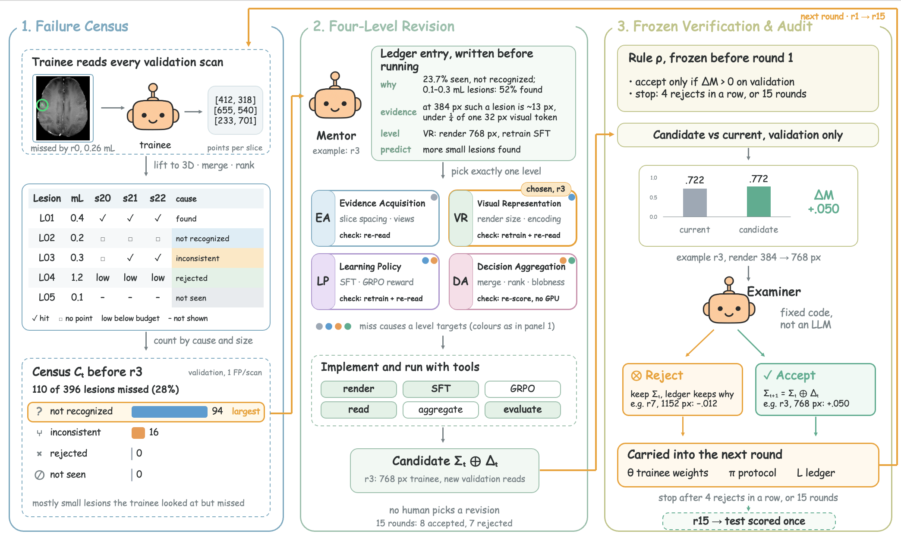
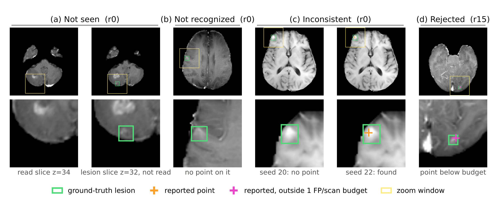
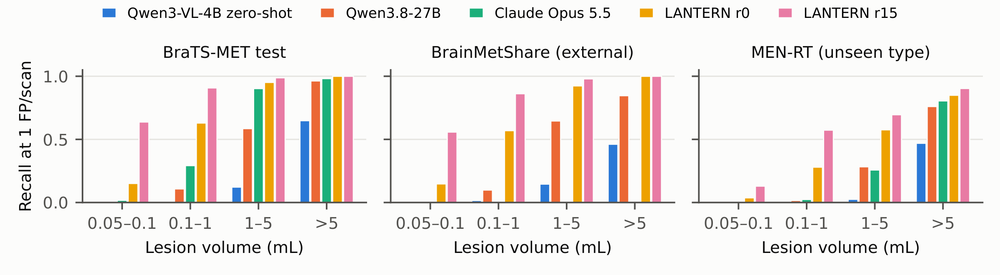
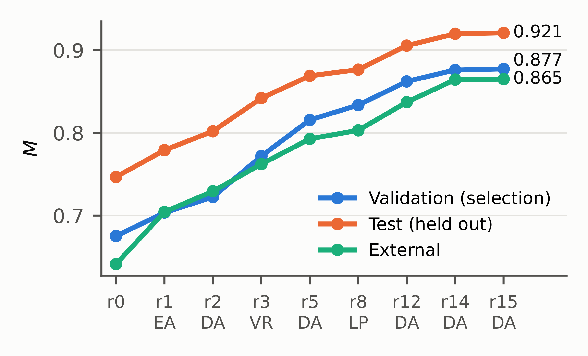
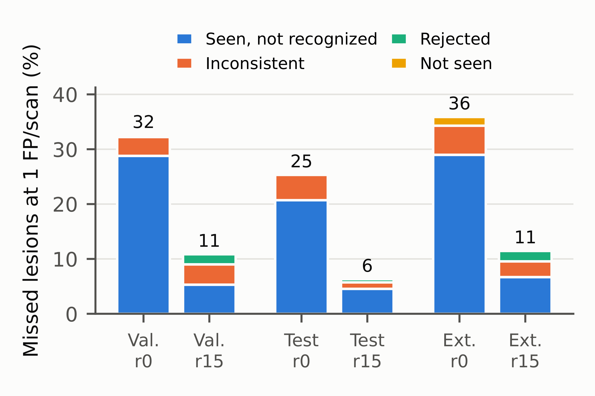
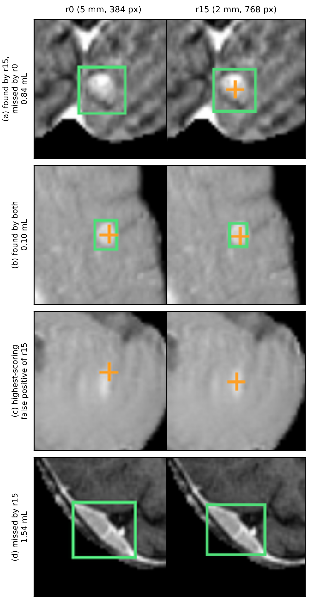

LANTERN: Lesion-finding AgeNt Through Error-driven Recursive learNing
Multimodal large language models (MLLMs) are becoming general readers of medical images, yet they remain weak at locating small abnormalities. Brain metastases expose this gap: at 384 px a 0.1 mL lesion covers less than a quarter of one visual token, and at one false positive per scan frontier MLLMs find fewer than 30% of lesions of 0.1–1 mL. Fine-tuning on one dataset helps but transfers poorly, and improving it further is slow trial and error steered by a single score.
We introduce LANTERN (Lesion-finding AgeNt Through Error-driven Recursive learNing), a framework in which an MLLM improves recursively from its own misses. LANTERN recasts model development as an error-driven loop: a failure census attributes every missed lesion to one of four causes, an LLM mentor revises one of four levels (evidence acquisition, visual representation, learning policy, decision aggregation) per round, and a rule frozen before the first round decides what is kept, without test data and with every tool call audited.
Over 15 unattended rounds, LANTERN raises a fine-tuned 4B MLLM from finding 75% to 94% of lesions at one false positive per scan on BraTS-MET, and 91% of those of 0.1–1 mL, compared with at most 51% and 29% for five frontier MLLMs read under the starting protocol; the gains hold on an external cohort (89%) and on unseen meningiomas (77%). These results show that an MLLM's own misses, attributed to their causes, can drive its reliable recursive self-improvement.
Radiosurgery now treats up to ten brain metastases without whole-brain irradiation, so every lesion has to be found before it can be planned. The ones most often missed are the smallest, a few millimetres across. The strongest frontier MLLMs find almost every lesion above 5 mL at one false positive per scan, but fewer than 30% of those between 0.1 and 1 mL.
A score says whether a change helped. It does not say why a lesion was lost: a lesion that fell between surveyed slices, one that was shown but not recognised, and one ranked below the false-positive budget all lower the score equally, yet each calls for a different fix. Improving a detector from its own misses, round after round, raises three problems.
The usual evaluation reports one number per system, not why each lesion was missed.
Thinner slices show more lesions but also yield more false positives; a larger view helps only after retraining. A revision must be free enough to change any part, yet small enough to be attributed.
Every accepted change is built on by all later rounds. Validation sets are small, retraining alone moves a score by several points, and an agent that sees test data or adjusts its own rule can produce gains that do not exist.

Slice spacing, views, number of reads. Targets not seen.
Render size, input encoding. Targets not recognized.
Training data, objective, reward. Targets not recognized, inconsistent.
Merging and ranking of reads. Targets inconsistent, rejected.

BraTS-MET test is held out from the run. BrainMetShare is an external cohort from another institution and scanner. BraTS-MEN-RT contains meningiomas, a tumour type the trainee was never trained on. Both external sets are read zero-shot. Every baseline reads like r0 (5 mm survey, 384 px views, same prompt, one read per view) and is aggregated and scored by the same code.
| BraTS-MET test | BrainMetShare (external) | MEN-RT (unseen type) | |||||||
|---|---|---|---|---|---|---|---|---|---|
| Model | M | R@1 | Small | M | R@1 | Small | M | R@1 | Small |
| Proprietary MLLMs | |||||||||
| Gemini 3.7 Flash | .460 | .510 | .285 | .342 | .398 | .265 | .521 | .580 | .160 |
| Claude Opus 5.5 | .409 | .513 | .292 | .290 | .398 | .273 | .480 | .470 | .024 |
| GPT-6.1 Sol | .250 | .303 | .065 | .157 | .185 | .063 | .383 | .444 | .040 |
| Open-weight MLLMs | |||||||||
| Qwen3.8-27B | .250 | .323 | .108 | .159 | .213 | .099 | .403 | .455 | .016 |
| Gemma 4 31B | .231 | .303 | .104 | .153 | .204 | .103 | .405 | .476 | .040 |
| MedGemma 27B | .002 | .000 | .000 | .003 | .003 | .000 | .007 | .010 | .008 |
| Ours (4B) | |||||||||
| Qwen3-VL-4B zero-shot | .107 | .116 | .004 | .058 | .054 | .016 | .229 | .231 | .000 |
| LANTERN r0 (start) | .747 | .747 | .629 | .641 | .641 | .569 | .607 | .646 | .280 |
| LANTERN r15 | .921 | .937 | .908 | .865 | .885 | .862 | .740 | .769 | .573 |
M: mean recall at 0.25/0.5/1/2 FP per scan. R@1: recall at 1 FP per scan. Small: recall at 1 FP per scan for lesions of 0.1–1 mL. A point is a hit within 5 mm of a lesion ≥ 0.1 mL. LANTERN: mean of 3 training seeds.
At 1 FP per scan, r15 finds 90.8% of test lesions of 0.1–1 mL. On the 115 lesions of 0.05–0.1 mL, which lie below the main threshold and never served as training targets, recall rises from .151 to .638.

r15's hits lie a median 1.2 mm from the lesion centroid (1.9–9.2 mm for the frontier MLLMs). Its slice-level specificity is .98 (at most .81 for any frontier MLLM). In scans with ten or more lesions it keeps .91 recall, while the best frontier MLLM falls to .33.


The examiner accepted 8 revisions and rejected 7. ΔM is the validation change on which the frozen rule decided. The leave-one-out column removes that revision from r15 and reports test M (r15: .921).
| Round | Level | Revision | Val. ΔM | Decision | Test without it |
|---|---|---|---|---|---|
| r1 | EA | survey spacing 5 → 2 mm | +.028 | accept | .868 |
| r2 | DA | peak-intensity tie-break | +.023 | accept | – |
| r3 | VR | render 384 → 768 px | +.050 | accept | .826 |
| r4 | EA | sampled reads, pairwise ranking | −.002 | reject | |
| r5 | DA | greedy-first + 4 sampled reads | +.044 | accept | .918 |
| r6 | DA | sampled-confirmation tie-break | −.001 | reject | |
| r7 | VR | 1152 px views | −.012 | reject | |
| r8 | LP | GRPO on top of SFT | +.018 | accept | .905 |
| r9 | LP | longer GRPO, G = 8 | −.002 | reject | |
| r10 | DA | two-model report | −.001 | reject | |
| r11 | VR | 2.5D RGB input | −.016 | reject | |
| r12 | DA | merge radius 12 → 6 mm | +.031 | accept | .891 |
| r13 | EA | 1 mm greedy read | −.002 | reject | |
| r14 | DA | 3D Hessian blobness score | +.015 | accept | .906* |
| r15 | DA | one evidence scale | +.002 | accept | .920 |
*Removed together with r2. The r3 row is compared under greedy SFT reads.
Round 12 shows the chain the ledger records for each revision. Miss: the census put the largest share of misses under not recognized. Diagnosis: the mentor wrote a new diagnostic over the raw points and found that 19 of the 50 lesions missed at 2 FP per scan had a greedy-read point within 5 mm: “reports of a small lesion chain into a neighbouring cluster … the cluster's medoid then lies >5 mm from the lesion.” Hypothesis, written before the run: a 6 mm merge radius, “chosen a priori, no sweep,” keeps clusters compact relative to the 5 mm hit tolerance. Verdict: ΔM = +.031, positive on all three seeds, accepted; removing it later costs −.030 on test.
Without being told, the mentor moved to thin slices (5 → 2 mm), as consensus imaging protocols for brain metastases prescribe; magnified the view (384 → 768 px); and added a compact-lesion prior that ranks round, enhancing nodules above tubular vessels with the same support.
(a) A 0.84 mL lesion found by r15 and missed by r0. (b) A 0.10 mL lesion found by both. (c) The highest-scoring false positive of r15. (d) A 1.54 mL lesion missed by r15.
Green box: ground-truth lesion; orange +: reported point.

@inproceedings{duan2027lantern,
title = {Can Its Own Misses Teach an {MLLM} to Find
Small Brain Metastases?},
author = {Duan, Yixuan and Geng, Kexin and Xu, Hanwen and Qiu, Wei},
booktitle = {Under review},
year = {2027}
}